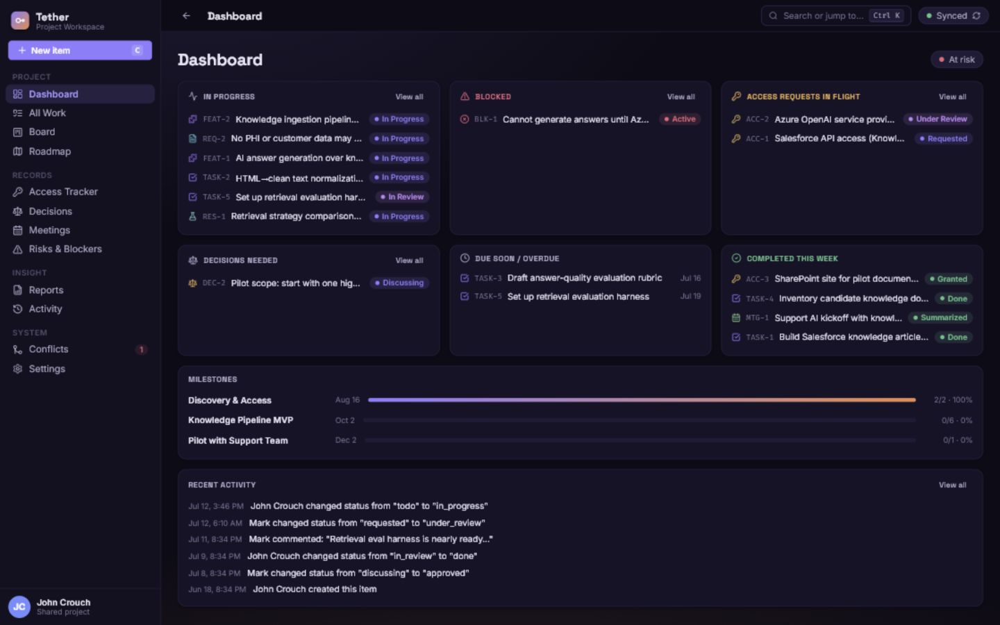
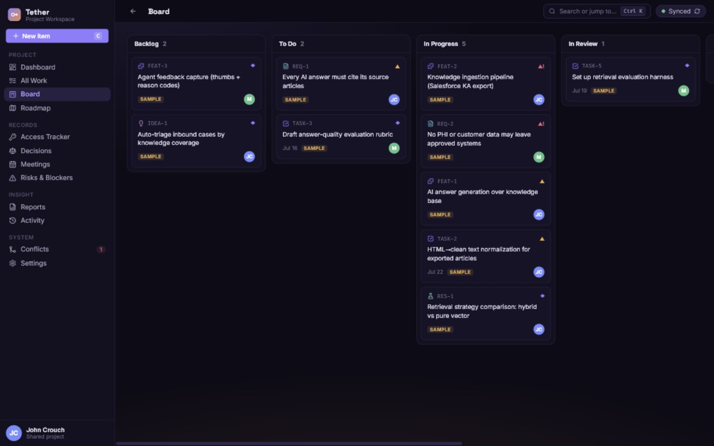
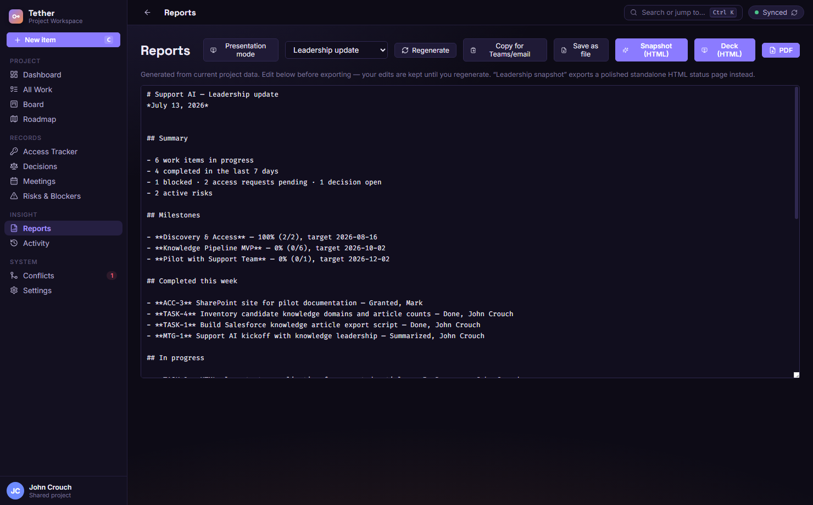
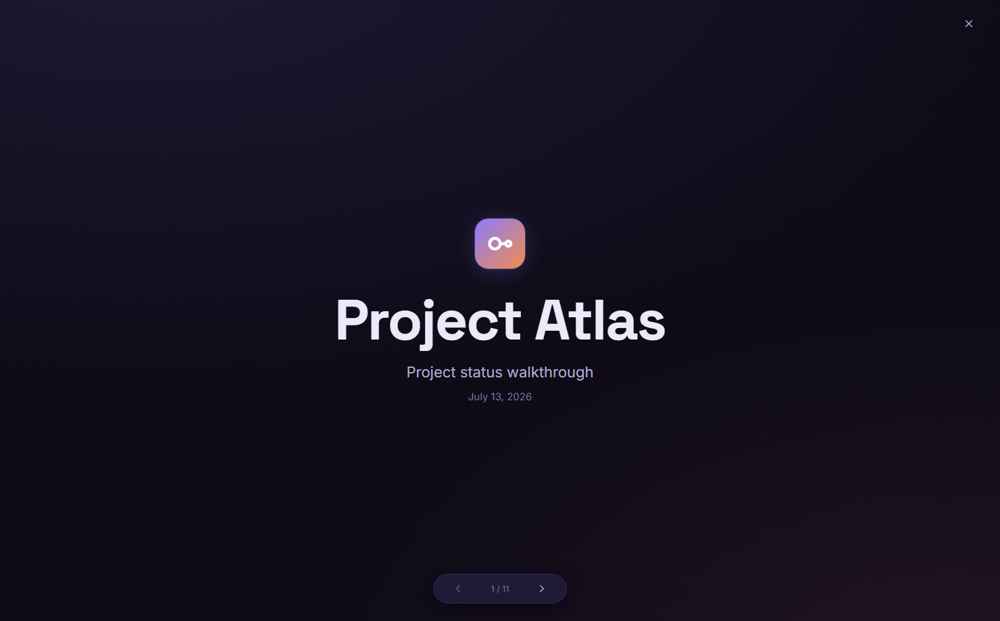

01
Lost context
Requirements, risks, blockers, and meeting notes stay connected through typed IDs and explicit links instead of memory and search luck.
A desktop workspace that keeps two people, two computers, and one project tied together: work items, decisions, risks, access requests, meetings, milestones, reports, and live presentation mode.
Chats carry decisions, spreadsheets carry access requests, notes carry meeting context, and leadership updates become archaeology. Tether turns that scattered surface area into one editable, linked, auditable project record.
Requirements, risks, blockers, and meeting notes stay connected through typed IDs and explicit links instead of memory and search luck.
Access requests get their own tracker with status, system, next action, owner, and follow-up dates.
Reports and presentation mode are generated from live project data, so status meetings start from the record instead of rebuilding it.
Dashboard, all work, board, roadmap, access tracker, decisions, meetings, risks, reports, activity, conflicts, and settings are all views over the same local SQLite project record.

Tether is built around work items: each one has a type, status, owner, body, structured fields, comments, links, activity, versions, and searchable history.
Task, feature, requirement, decision, risk, blocker, access request, meeting note, idea, question, defect, or research item.
Relates, blocks, implements, supports, requires access, discussed in, validates, supersedes, and parent/child links.
Use list filters, quick edits, or the board to move statuses without breaking the underlying record.
Blocked, access pending, open decisions, active risks, and sync conflicts get surfaced instead of buried.
Generate leadership snapshots, markdown updates, PDFs, and fullscreen presentations from the same live data.
Each computer keeps its own SQLite database. Mutations become append-only JSONL operations in a shared folder, typically OneDrive or SharePoint. The SQLite database itself is never placed in the synced folder.
Offline edits queue locally, field-level changes converge, and title/body conflicts are surfaced for human review.
Tether has purpose-built screens for day-to-day execution and leadership communication. These are live screenshots from the current browser-preview build.

Move cards through status lanes while preserving item history, owner, priority, and linked context.

Generate leadership updates, copy them into Teams or email, save Markdown, or print a PDF snapshot.

Fullscreen walkthrough for screen sharing, navigable with arrow keys, space, and Escape.
Dashboard health, blocked work, pending access, active risks, due dates, activity, and milestone progress in one view.
Tether makes no network calls of its own. Sync, if enabled, rides on the folder client the users choose. The renderer runs with context isolation, no Node integration, and a typed IPC allowlist.
$ npm test ok migrations create schema and device identity ok item CRUD, activity, links, comments, versions ok sync convergence through a shared folder ok conflict surfacing and deterministic resolution ok offline queue and corruption quarantine $ npm run build built dist-electron/main.js built dist-electron/preload.js built renderer assets warn large renderer chunk; functional build passed
Schema, migrations, item CRUD, links, comments, versions, activity, milestones, releases, users, search, sample data, and backups.
Folder transport, two-device convergence, conflict review, deterministic ident collision handling, offline queue, and attachment blob transport.
Dashboard, All Work, Board, Roadmap, Access Tracker, Decisions, Meetings, Risks & Blockers, Reports, Activity, Conflicts, Settings, and Onboarding.
TipTap foundations are present; the project record notes plain-text autosave remains the current baseline while rich blocks are completed.
Electron Builder NSIS packaging, signed release workflow, dependency update cadence, and broader installer validation.
Built for small teams that need a shared project brain without adding a new service, a new server, or another fragile spreadsheet.